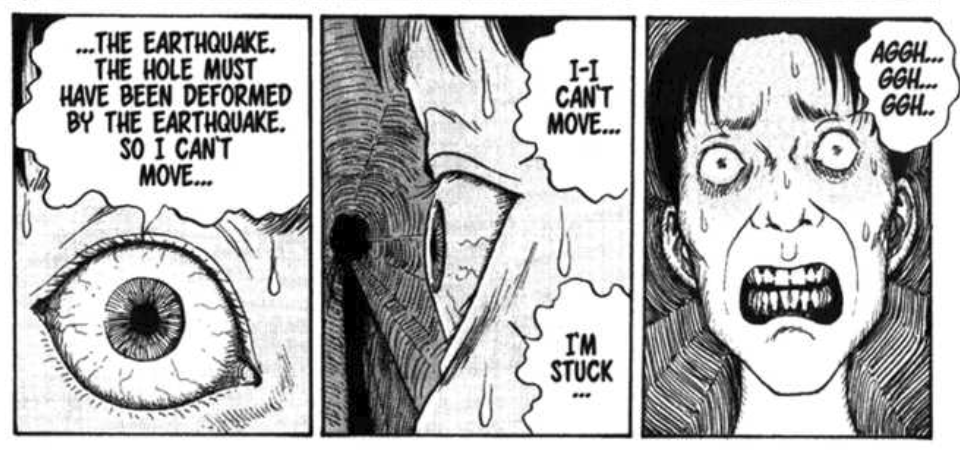

The Enigma of Amigara Fault |
Regrettably, you were not able to save Nakagaki as he sinks deeper into the hole. You have a nightmare that night... dreaming that you were Nakagaki as he sinks deeper and deeper into the mountain.
The next day comes and Nakagaki still has not returned, while more people begin to go into their "desinated" hole. You see Yoshida sulking as she signals you to follow her.
